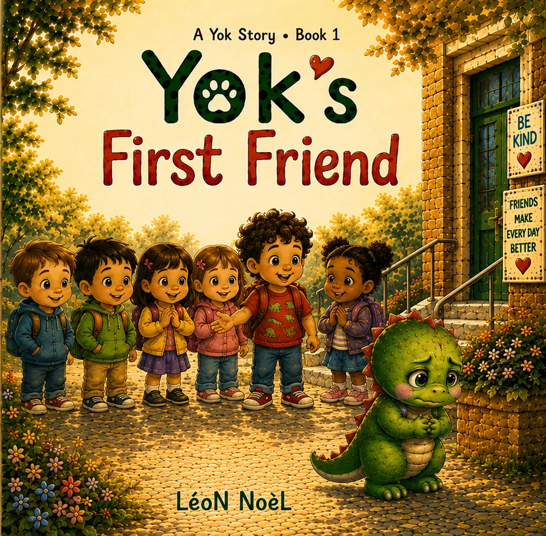
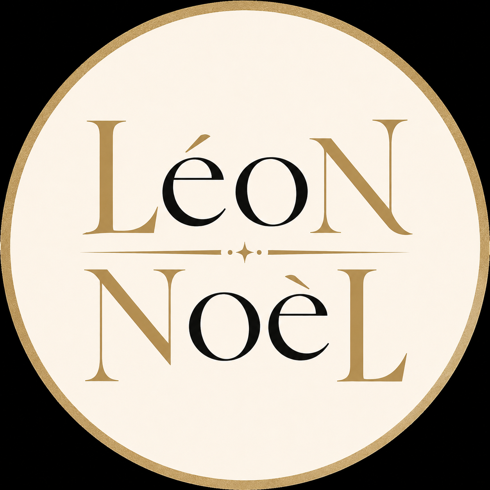

About the author
Stories for little brave hearts.
LéoN NoèL writes emotionally supportive children’s books that give young readers concrete language for the big moments of growing up.


The story behind the stories
Warm books. Practical words. Room to try.
LéoN NoèL created Yok Stories for children navigating friendship, school, mistakes, honesty, waiting, and feelings. Every story offers one usable phrase, one small action, and an emotionally safe way to practice.
That same gentle voice continues through the bilingual adventures of Yok and Tibo, and through Luma’s dreamlike Blue Dreams Forest.
Child-sizedOne clear emotional skill at a time.
Conversation-readyNatural openings for trusted grown-ups.
Warmly illustratedPictures that carry meaning and feeling.
Made to shareFor home, classroom, and library reading.